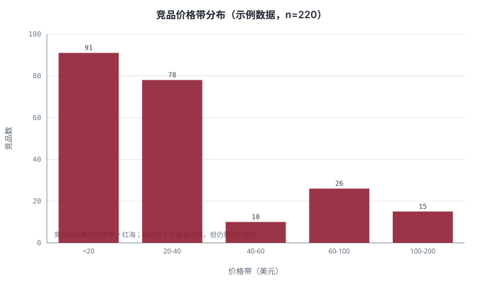
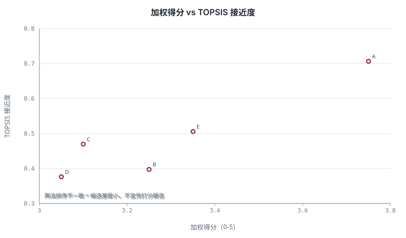
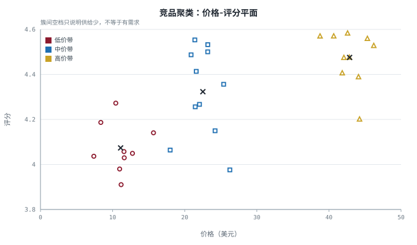
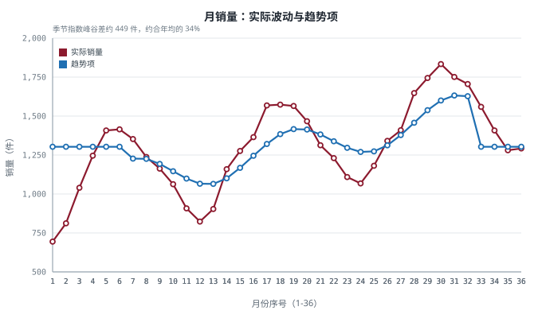
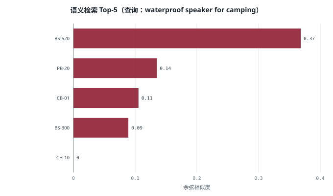
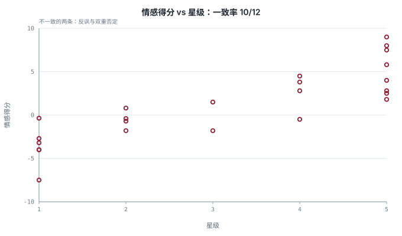
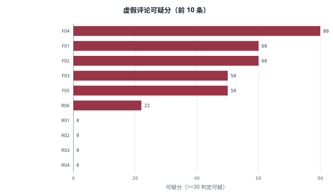
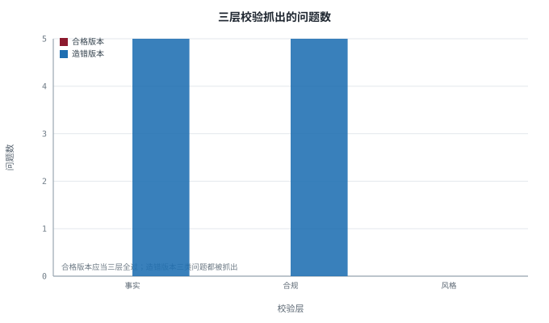
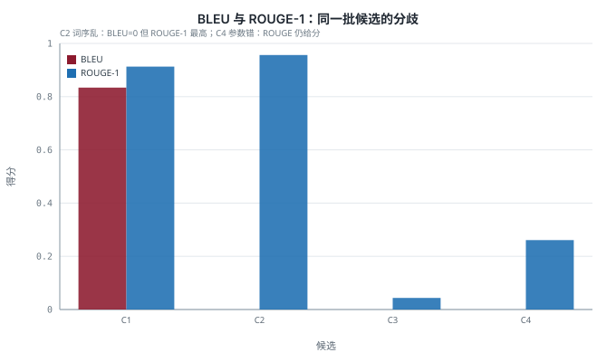

comtrade_batch.py
海关贸易数据批量拉取
按「报告国 × 年份 × HS 编码」批量查询 UN Comtrade 的进出口数据，自带限速与断点续跑。
- 输入
- 国家代码、年份区间、HS 编码列表
- 输出
- 原始返回 + 清洗表格 + 运行日志
- 依赖
- requests, pandas
- 章节
- 模块三 §2
这里放《智能贸易》各章用到的全部程序。每个算法程序都自带一张可视化图—— 图不是示意画，而是程序真实跑出来的输出；点开图可看原尺寸 SVG。
课件里讲方法，这里给代码。看代码不是目的，改参数、看输出怎么变才是。
11 个程序分四组。9 个算法程序的图由各自的 save_visual() 生成，
统一用 chartlib.py（纯标准库画 SVG，不依赖 matplotlib），
运行 python gen_visuals.py 可一次性重新生成 visuals/*.svg。
三项脚本：电商分析附价格带分布图；另两项需要真实 API 与实时网络，输出为数据文件。
按「报告国 × 年份 × HS 编码」批量查询 UN Comtrade 的进出口数据，自带限速与断点续跑。

读入你已合法获得的数据文件，做清洗、价格带分布、高口碑低竞争筛选与卖点词频统计。
两条数据路线：Google Places API（覆盖好、计费、存储受限）与 OpenStreetMap Overpass（免费、条款宽松）。
四类选品算法中可运行的四项（类一／类二＋类四／类三／类一），图为本程序实际输出。

同一批候选，用两种多准则方法排序，再做 2000 次权重扰动，看第一名会不会被翻转。

从购物篮算支持度／置信度／提升度找真搭配；再用 k-means++ 把竞品按价格—评分分群。

log-log 幂律拟合并给出 80% 预测区间；再用经典分解算季节指数与备货时点。

用「买家的说法」而不是品类词去检索商品库，并输出查询高权重词以便解释匹配原因。
先清洗再分析，图为本程序实际输出。

按星级分桶算 TF-IDF 得痛点词；手写吉布斯采样跑 LDA 发现主题；词典法做情感并处理否定。

把「好不好」拆成「哪方面好、哪方面差」，算改进优先级；再用 7 个可解释特征给评论打可疑分。
从模板到评估，图为本程序实际输出。

用「利益短语 + 证据 + 所以意味着什么」骨架生成五点；组装提示词；做事实/合规/风格三层校验。

手算 BLEU（含平滑）与 ROUGE-N，用四段构造文本演示指标失灵；再给一套标准写死的四维评审。
comtrade_batch.py 与 places_importers.py
需要真实 API 密钥与实时网络，输出是数据文件而不是可预知图形——具体的输出字段与用法见脚本顶部的文档字符串。
ecommerce_analyze.py 的图是用合成数据演示价格带分布，真实使用时把你的数据交给
load() + clean() 后再画。
这一节对应课件第二章第 4、6、8 节与第 9 节：三类算法的每一个算法都配了数学公式与应用场景（见课件）， 这里给出可执行的清单——哪个算法配哪个包、用哪个公开数据练。所有链接均为官方主页或官方仓库，课程不提供镜像。
| 类别 | 回答的问题 | 具体算法 | 主要开源包 | 练什么 |
|---|---|---|---|---|
| 一 降维与指标构建 | 多个指标怎么合成一个分数？信息能不能压缩？ | 加权评分卡、AHP、TOPSIS、熵权法、变异系数法、PCA、因子分析 | numpy、pandas、scikit-learn、pymcdm | 同一批候选换三种权重法，看排序是否翻转 |
| 二 相关性与因果推断 | 什么因素真的影响了销量？改动带来多少增量？ | Pearson／Spearman、OLS、Ridge／Lasso、DID、合成控制、PSM、IV | statsmodels、linearmodels、DoWhy、EconML | 用 DID 估一次「活动带来的增量」 |
| 三 聚类与分类 | 竞品能分成几群？这个品会不会成爆款？ | K-means、层次聚类、DBSCAN／HDBSCAN、Apriori／FP-Growth、逻辑回归、决策树、随机森林、XGBoost／LightGBM、社区发现 | scikit-learn、hdbscan、mlxtend、xgboost、lightgbm、networkx | 竞品分群 + 爆款概率预测 |
| 四 离散选择与需求分析 | 买家在几个选项里会选谁？价格变一点需求变多少？ | MNL、嵌套 Logit、混合 Logit、Conjoint、需求弹性、ARIMA、Prophet | statsmodels、pyblp、pmdarima、prophet、arch | 估一次价格弹性并算最优价位 |
| 任务 | 具体算法／方法 | 主要开源包 | 练什么 |
|---|---|---|---|
| 关键词 | TF-IDF、TextRank、YAKE、RAKE | scikit-learn、gensim、yake、summa | 分桶提词，对比三种方法前 20 词重合度 |
| 主题 | LDA、NMF、BERTopic、Top2Vec | gensim、scikit-learn、BERTopic、top2vec | 跑 LDA 与 BERTopic，比较可读性 |
| 情感（词典） | VADER、TextBlob、SentiWordNet、中文词典 | vaderSentiment、textblob、nltk、snownlp | 与星级对比算一致率 |
| 情感（模型） | BERT／RoBERTa 微调、多语种模型 | transformers、sentence-transformers | 微调一个二分类情感模型 |
| ABSA | 抽取式（序列标注）、生成式（指令微调） | transformers、spaCy、pyabsa | 抽方面词并做句内情感 |
| 虚假检测 | 特征＋GBDT、图神经网络、LLM 判别 | scikit-learn、xgboost、shap | 手工特征 + 树模型，看特征重要性 |
| 摘要 | 抽取式（TextRank）、生成式（T5／BART） | sumy、transformers、rouge-score | 生成摘要并强制附原句引用 |
| 内容生成 | 模板、Seq2Seq、SFT、LoRA、RAG | transformers、peft、langchain、llama-index、dspy | 用 LoRA 微调一个语气模型 |
| 生成评估 | BLEU、ROUGE、BERTScore、LLM-as-a-Judge | sacrebleu、rouge-score、bert-score、ragas | 用同一批候选验证指标失效 |
| 数据集 | 规模与内容 | 适合练什么 | 官方入口 |
|---|---|---|---|
| Amazon Reviews 2023 | 5.7 亿条评论、33 品类；评分／文本／图片／元数据／共同购买图 | 主题·情感·ABSA·虚假检测·语义检索 | amazon-reviews-2023.github.io ↗ |
| Amazon Reviews 2023（HF 版） | 可用 datasets 库直接流式加载，省去下载解析 | 同上 | huggingface.co/datasets/McAuley-Lab ↗ |
| UCI Online Retail | 英国在线零售交易明细；发票、商品、数量、单价、客户 ID | 关联规则·RFM 分层·需求预测 | archive.ics.uci.edu/dataset/352 ↗ |
| Yelp Open Dataset | 商户评论与星级、营业信息 | 情感分析·摘要·多任务 | business.yelp.com/data ↗ |
| UN Comtrade | 各国海关进出口统计，按 HS 编码查询 | 品类贸易流向·市场容量 | comtradeplus.un.org ↗ |
| Google Trends | 搜索热度指数（不是销量） | 季节性·品类升温降温 | trends.google.com ↗ |
| Kaggle Datasets | 电商与零售数据集最集中的入口 | 找垂直品类数据 | kaggle.com/datasets ↗ |
| Hugging Face Datasets | 文本、多语种、嵌入类数据与模型 | 训练与评测文本模型 | huggingface.co/datasets ↗ |
| World Bank Open Data | 人均 GDP、人口、互联网普及率等宏观指标 | 市场潜力·国别筛选 | data.worldbank.org ↗ |
| 包名 | 能做什么 | 本课程用在 | 官方文档 |
|---|---|---|---|
scikit-learn | 分类、回归、聚类、降维、评估的基线全能库 | 类一 PCA、类三聚类与树 | scikit-learn.org ↗ |
statsmodels | OLS、Logit、MNL、时间序列、假设检验 | 类二回归、类四 MNL | statsmodels.org ↗ |
linearmodels | 面板数据、固定效应、工具变量 | 类二 DID／IV | bashtage.github.io/linearmodels ↗ |
DoWhy | 因果推断统一框架：建模—识别—检验 | 类二全流程 | pywhy.org/dowhy ↗ |
EconML | 异质性处理效应（谁受影响更大） | 类二进阶 | pywhy.org/econml ↗ |
XGBoost / LightGBM | 梯度提升，表格数据通常最强 | 类三爆款预测、虚假检测 | xgboost.readthedocs.io ↗ |
hdbscan / mlxtend | 密度聚类与关联规则（Apriori） | 类三 | rasbt.github.io/mlxtend ↗ |
transformers | 预训练模型统一接口：分类、生成、抽取 | §6 情感与 ABSA、§8 生成 | huggingface.co/docs/transformers ↗ |
sentence-transformers | 句向量与语义检索，几行代码做 embedding | §4 语义指标、§6 主题 | sbert.net ↗ |
gensim | LDA 主题模型、词向量、相似度 | §6 主题发现 | radimrehurek.com/gensim ↗ |
BERTopic | embedding＋聚类＋主题命名的现代主题建模 | §6 主题进阶 | maartengr.github.io/BERTopic ↗ |
vaderSentiment | 规则情感分析，开箱即用的基线 | §6 情感基线 | github.com/cjhutto/vaderSentiment ↗ |
PEFT | LoRA 等参数高效微调的官方实现 | §8 微调 | huggingface.co/docs/peft ↗ |
sacreBLEU / rouge-score | BLEU 与 ROUGE 的标准实现 | §8 生成评估 | github.com/mjpost/sacrebleu ↗ |
Ragas | RAG 与生成质量评测框架 | §8 评估 | docs.ragas.io ↗ |
pip install requests pandas（中文分词可选：pip install jieba）。raw/（原始数据，只读）、clean/（清洗结果）、code/（脚本），保证任何结论都能回溯到原始文件。code/ 目录，用命令行运行。本课程只教合法路径。三份脚本都只调用官方开放接口，或处理你已合法获得的数据文件。课程不提供、也不建议任何绕过反爬、伪造请求、突破平台限制的做法——这类行为违反平台条款，可能导致账号封禁与法律责任。
使用任何数据源前，请确认三件事：数据从哪来（来源是否公开/授权）、能用来做什么（条款是否允许商业使用）、能保存多久（是否允许长期存储）。